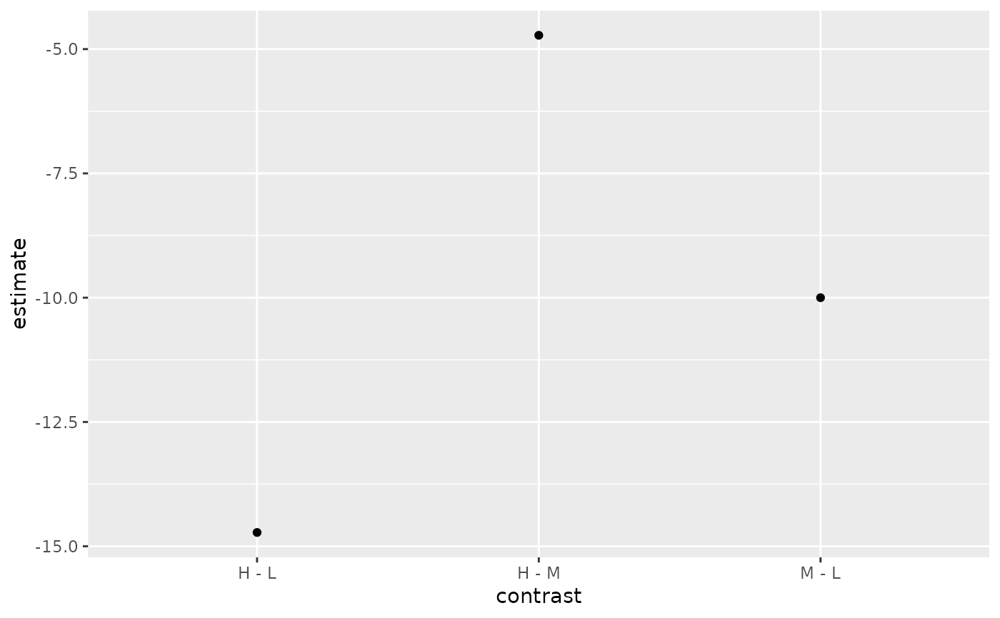
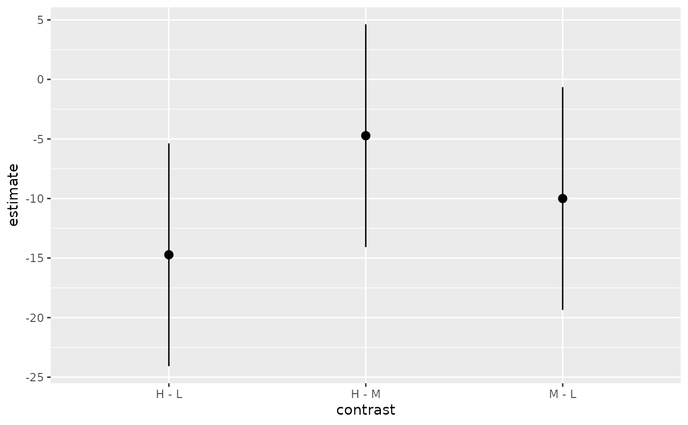
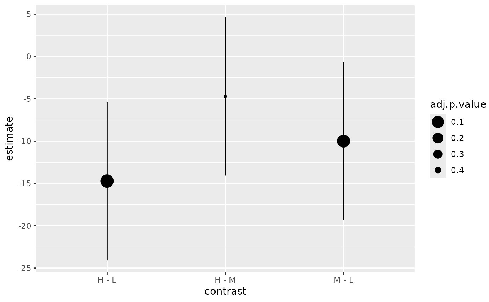

![[Deprecated]](figures/lifecycle-deprecated.svg)
This function is deprecated because using broom::tidy() is a better
solution to convert model objects.
Arguments
- model
an object of class
glht,confint.glht,summary.glhtormultcomp::cld()- data, ...
other arguments to the generic ignored in this method.
Examples
amod <- aov(breaks ~ wool + tension, data = warpbreaks)
wht <- multcomp::glht(amod, linfct = multcomp::mcp(tension = "Tukey"))
tidy(wht) # recommended
#> # A tibble: 3 × 7
#> term contrast null.value estimate std.error statistic adj.p.value
#> <chr> <chr> <dbl> <dbl> <dbl> <dbl> <dbl>
#> 1 tension M - L 0 -10 3.87 -2.58 0.0336
#> 2 tension H - L 0 -14.7 3.87 -3.80 0.00111
#> 3 tension H - M 0 -4.72 3.87 -1.22 0.447
fortify(wht)
#> Warning: `fortify(<glht>)` was deprecated in ggplot2 3.6.0.
#> ℹ Please use `broom::tidy(<glht>)` instead.
#> lhs rhs estimate
#> tension1 M - L 0 -10.000000
#> tension2 H - L 0 -14.722222
#> tension3 H - M 0 -4.722222
ggplot(tidy(wht), aes(contrast, estimate)) + geom_point()

ci <- confint(wht)
tidy(ci) # recommended
#> # A tibble: 3 × 5
#> term contrast estimate conf.low conf.high
#> <chr> <chr> <dbl> <dbl> <dbl>
#> 1 tension M - L -10 -19.4 -0.648
#> 2 tension H - L -14.7 -24.1 -5.37
#> 3 tension H - M -4.72 -14.1 4.63
fortify(ci)
#> Warning: `fortify(<confint.glht>)` was deprecated in ggplot2 3.6.0.
#> ℹ Please use `broom::tidy(<confint.glht>)` instead.
#> lhs rhs estimate lwr upr
#> M - L M - L 0 -10.000000 -19.35230 -0.6476956
#> H - L H - L 0 -14.722222 -24.07453 -5.3699178
#> H - M H - M 0 -4.722222 -14.07453 4.6300822
ggplot(tidy(confint(wht)),
aes(contrast, estimate, ymin = conf.low, ymax = conf.high)) +
geom_pointrange()

smry <- summary(wht)
tidy(smry) # recommended
#> # A tibble: 3 × 7
#> term contrast null.value estimate std.error statistic adj.p.value
#> <chr> <chr> <dbl> <dbl> <dbl> <dbl> <dbl>
#> 1 tension M - L 0 -10 3.87 -2.58 0.0335
#> 2 tension H - L 0 -14.7 3.87 -3.80 0.00114
#> 3 tension H - M 0 -4.72 3.87 -1.22 0.447
fortify(smry)
#> Warning: `fortify(<summary.glht>)` was deprecated in ggplot2 3.6.0.
#> ℹ Please use `broom::tidy(<summary.glht>)` instead.
#> lhs rhs estimate se t p
#> M - L M - L 0 -10.000000 3.872378 -2.582393 0.03353428
#> H - L H - L 0 -14.722222 3.872378 -3.801856 0.00114445
#> H - M H - M 0 -4.722222 3.872378 -1.219463 0.44739006
ggplot(mapping = aes(contrast, estimate)) +
geom_linerange(aes(ymin = conf.low, ymax = conf.high), data = tidy(ci)) +
geom_point(aes(size = adj.p.value), data = tidy(smry)) +
scale_size(transform = "reverse")

cld <- multcomp::cld(wht)
tidy(cld) # recommended
#> # A tibble: 3 × 2
#> tension letters
#> <chr> <chr>
#> 1 L a
#> 2 M b
#> 3 H b
fortify(cld)
#> lhs letters
#> L L a
#> M M b
#> H H b